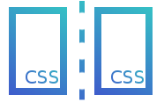

AugJS is a lightweight Web Component + Shadow DOM wrapper.
It helps you make UI Templates easily!Scoped Cascading StylesheetsOverlapping styles don't conflict with each other!Straightforward TemplatingCreate structured templates with unidirectional data flow.Modularized, Pluggable CodeDesign modules that can be imported into any AugJS site.John Nguyen • March 2017